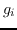
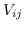
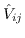

Next: Computation Up: userhtml Previous: Restoring an image
Because the basic interpolated calibrator gains do not
determine the antenna gains perfectly at each time stamp, the quality of the
resultant image suffers. Often the technique of self-calibration is
used to make additional corrections to the antenna gains as a function of time.
It is notionally very similar to the basic calibration. The main
difference is than the model of the source is generally more complex
than just
assuming its a point source at the phase centre.
The self-calibration technique finds antenna gains, , which minimise
the difference between
the measured visibilities, , and the model visibilities,
, viz
The model visibilities are generally derived from a model image (which should have units of Jy/pixel). For a complex source, the model image will usually be determined by the deconvolution tasks (the outputs of clean, mfclean or maxen without the restore step). If the source is a point source, then a point-source model could be used, although the restriction that it be located at the phase centre is lifted.
The self-calibration procedure is often performed iteratively, each time with a better model, until finally the sequence converges and no more improvement in the image quality can be made.
Self-calibration is not a technique that should be applied blindly. This is especially true for ATCA data because, compared with the VLA, the problem is only slightly over-determined. This is because the ATCA has, at most, 15 baselines to determine the complex gains for 6 antennas, whereas the VLA has, at most, 351 baselines to determine the complex gains for 27 antennas. Because we can set the phase of one antenna to zero, the problem reduces to finding 11 real numbers from 30 real equations. With the 5-antenna compact array, we must find 9 real numbers from 20 real equations. This problem is exacerbated when one antenna is absent from the data for a period of time, or you have flagged it out because of poor data quality.
There are other problems to do with the east-west nature of the ATCA - see Bob Sault's technical memo `Some simulations of self-calibration for the AT' (AT Memo 39.3/058). One important point to keep in mind is that self-calibration with the ATCA depends crucially on the initial model that you start with - much more so than with the VLA where you can start with quite a poor model but arrive at the correct result after just a few iterations.
Self-calibration, like basic calibration, requires that the signal-to-noise ratio on each baseline be of the order of at least 5 or so. For weak sources, this may require a long solution interval, within which the gains are assumed to be constant. If, in reality, the gains are changing on a time-scale significantly shorter than your solution interval, and these changes are degrading your image quality, then you will be unable to improve the image quality. The time-scale on which you will often find it necessary to correct the gains is approximately one minute. Thus, weak sources often cannot be self-calibrated. For a continuum observation (100 MHz bandwidth) with the ATCA, you will, typically, need a signal strength of 100 mJy before self-calibration is possible.
Note that it is not the receivers that cause the gains to be unsteady with time, but the atmosphere. In a similar way to the degradation of an optical image by the atmosphere, a radio image is defocused by the phase (and amplitude) noise that atmospheric cells induce into the wavefront. Self-calibration can be thought of as an off-line mimicry of adaptive optics in optical astronomy.